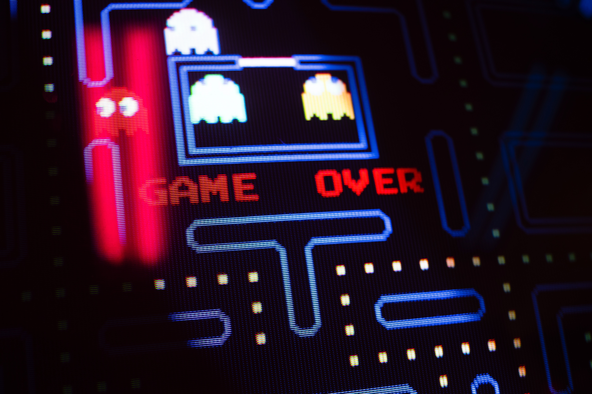
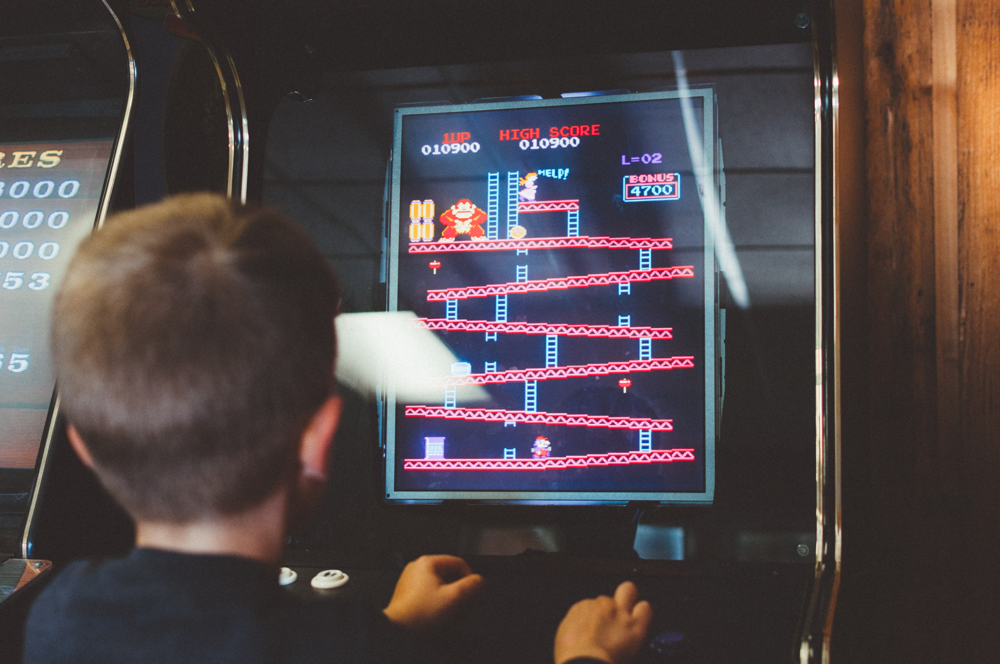
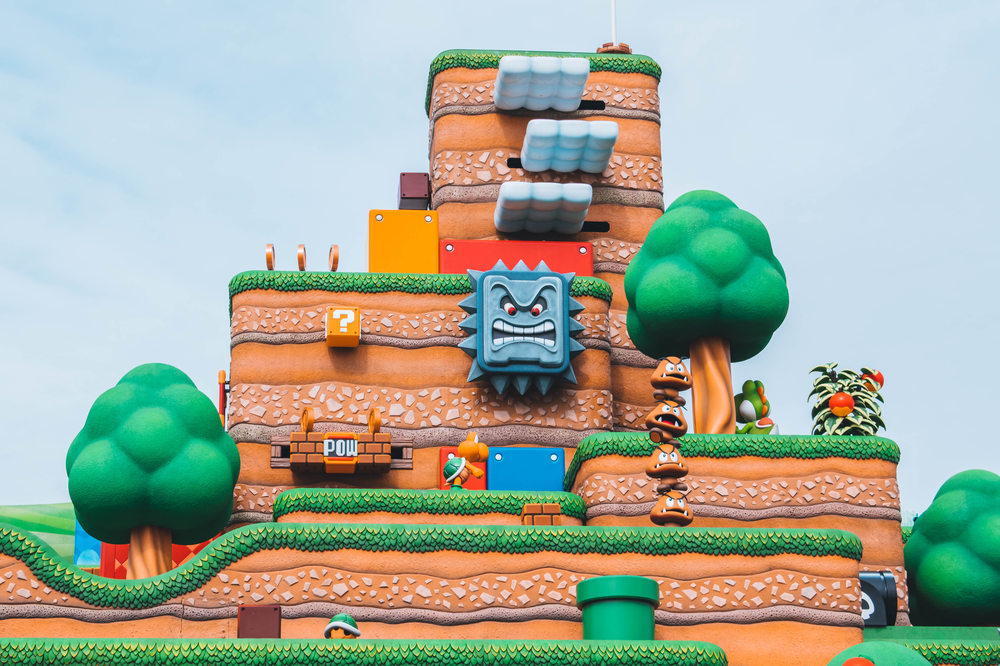
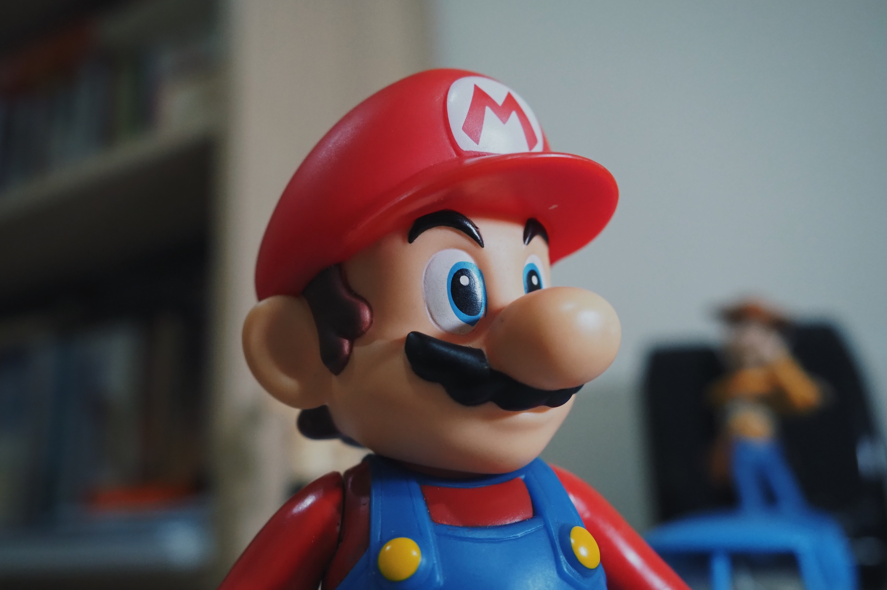

Se Pong fez as pessoas se acostumarem a jogar em público, Space Invaders
levou o vício a um novo patamar. Foi o produto que deu um sopro de ânimo
a um abatido nicho de mercado e que inspirou muitos pretendentes a
designers a seguir na profissão (Shigeru Miyamoto, da Nintendo, e Hideo
Kojima, da Konami, se declaram influenciados pelo jogo). Em 1978, a
presença de Space Invaders no Japão era maciça – em bares, restaurantes,
shopping centers. Em dois anos, a Taito distribuiu 360 mil máquinas no
mundo (um sexto delas apenas nos EUA), que renderam mais de US$ 2
bilhões em fichas (moedas, no caso) ao final de 1982.
1980 – Pac-Man

O grande público já estava mais acostumado aos videogames na entrada da
nova década, o que fez o sucesso de Pac-Man algo inevitável. Pela
primeira vez o jogador pôde se relacionar realmente container-only-img um protagonista
– mesmo que ele fosse uma bola amarela com crises de apetite e
perseguida por fantasmas obcecados.
Antes do herói criado por Toru Iwatani (diz a lenda que ele se inspirou
no formato de uma pizza cortada para criá-lo), games eram estrelados por
personagens anônimos. Mais do que um fenômeno cultural e midiático que
rendeu rios de dinheiro aos envolvidos, Pac-Man era a peça que faltava
para estabelecer definitivamente os games no imaginário popular.
1981 – Donkey Kong

O marco zero das narrativas nos games também é celebrado por ter sido o
primeiro jogo dirigido por Shigeru Miyamoto, na época um promissor
designer da Nintendo. Em Donkey Kong, o vilão batiza o jogo, deixando
para o herói Jumpman o papel de coadjuvante (rebatizado de “Mario” anos
mais tarde, o encanador acabou tornando-se o maior protagonista da
história dos games). Inspirado pelo filme King Kong, Miyamoto
determinou a premissa do gênero “plataforma” – correr e pular para
alcançar novos caminhos -, que dominou os games durante mais de uma
década. Curiosidade: até hoje há pessoas tentando quebrar o recorde do
jogo. A disputa entre os dois principais jogadores foi retratada no
ótimo documentário King of Kong.
1985 – Super Mario Bros.


Criado por Shigeru Miyamoto, Super Mario Bros. revolucionou de cara,
obrigando o jogador a seguir sempre adiante, explorando oito mundos com
uma inédita variedade de cenários e utilizando poderes que nenhum título
oferecia. Mario pode crescer, atirar fogo, correr e saltar, além de
eliminar inimigos de maneiras diferentes. Nunca um herói virtual foi
controlado de modo tão refinado e preciso. Simples de aprender e difícil
de dominar (e largar), foi inspiração para todos os games de ação.